Unsteady Gas Flow
Numerical Example : Simulation of Shock Tube
Unsteady gas flows are among the most specialised topics in gasdynamics. Many aspects of compressible flow have already been studied in detail, including one dimensional flows, isentropic flows, shock waves and two dimensional supersonic flows. In addition there are many situations where the flow is unsteady such as in shock tubes, explosions and acoustics. To start with this section will cover :
- Moving normal shock waves
- reflection of a moving shock
- unsteady expansion waves
- shock tube flow.
Unsteady flow means that flow properties at points in the flow over time. These flows require additional considerations due to the rate of change of flow properties. In many cases a closed form analytical solution is not possible and numerical tools such as CFD will be required. In this section an understanding of the basic physics is covered so that flows have been restricted to variation in one dimension. Several simplifying assumptions are also required to arrive at a closed form solution.
- The flow is generally inviscid. Shocks are thus lines of singularity where this assumption is broken.
- The flow is adiabatic. Heat transfer into or out of the system is not considered. Temperature changes will only occur due to internal state changes in the gas.
- The gas is perfect.
- The flow is one dimensional and thus there are no area changes. I.e. $dA=0$ .
Moving Normal Shock Waves.
Compared to a stationary observer, there are cases such as for the shock tube and blast waves where the shock wave is moving. In many cases by a change of frame of reference to one that is moving with the shock wave, it is possible to analyse a moving shock by the same methods as has been shown previously for a stationary normal shock.
Generation of a Moving Normal Shock
In a previous section the formation of a shock in a piston-cylinder arrangement was shown. The cylinder is filled with gas at rest. At $t=0$ the piston is pushed at high speed to the right (Fig 59). If the piston speed is sufficiently high the compression waves produced will coallese and form a shock wave that is moving to the right.
The speed of the shock wave will be $W$ while the speed of the piston is $U_p$ . The shock wave is moving faster than the local speed of sound in the gas and is moving faster than the piston. The gas entrapped between the piston and the shock wave will be shown to also be moving at the same speed as the piston. This is referred to as Shock Induced Motion.
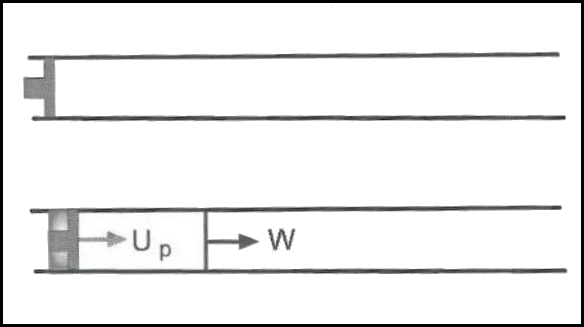
Figure 59. Unsteady Shock produced by Piston Motion.
The motion of shock wave and piston can be represented by plotting position versus time in an x-t diagram. Since the shock and piston are moving at constant speed, their paths on the x-t diagram will be straight lines. The diagram can also be used to trace the path of any particular particle. If a particle is located at $x= x_0$ at time $t=0$ then it will remain stationary until impacted by the shock wave. At the time of impact $t=t_0$ the particle starts to move with a speed $U_p$ and its path is parallel to that of the piston.
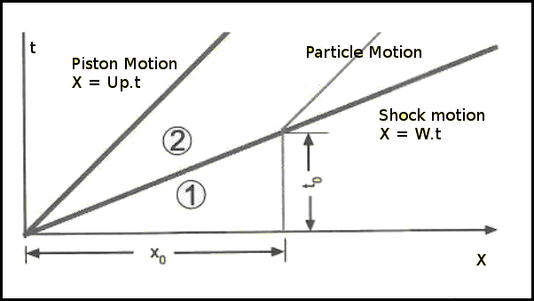
Figure 60. x-t Diagram for Piston induced Shock Motion.
The shock wave speed is typically expressed in terms of a Shock Mach Number, $M_s$, defined as $M_s = W\/a_1$ where $a_1$ is the speed of sound on the gas in-front of the shock wave, ie. gas at state (1). Shock motion will always be supersonic, $M_s > 1$.
Calculation of Flow behind a Moving Shock Wave
In a previous section the equations of motion governing the flow for a situation when the shock is stationary have been presented. A similar strategy can be taken in the case of a shock wave moving at constant speed. By applying a change of reference frame and applying an equal and opposite speed W everywhere to the flow, then the problem again becomes one of a stationary shock.
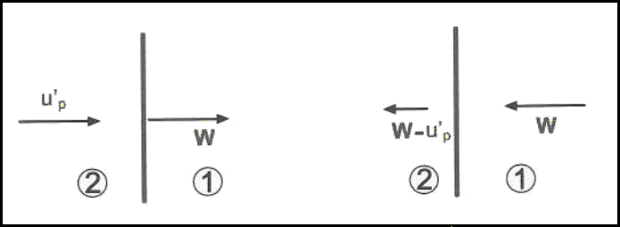
Figure 61. Frame of Reference Change for Moving Wave
The equations governing this flow are,
$ρ_1W=ρ_2(W-u^'_p)$ --- conservation of mass through shock (continuity)
$P_1+ρ_1W^2=P_2+ρ_2(W-u^'_p)^2$ --- conservation of momentum
$h_1+W^2/2=h_2+{(W-u^'_p)^2}/2$ --- conservation of energy
The continuity equation can be arranged as follows,
$$W-u^'_p=Wρ_1/ρ_2$$
Substituting this into the momentum equation and simplifying gives,
$$P_2-P_1=ρ_1W^2(1-ρ_1/ρ_2)$$
or
$$W^2={(P_2-P_1)}/{(ρ_2-ρ_1)}ρ_2/ρ_1\text" or "(W-u^'_p)^2={(P_2-P_1)}/{(ρ_2-ρ_1)}ρ_1/ρ_2$$
Specific enthalpy $h=e+p\/ρ$, so substituting this and the above relations into the energy equation gives,
$$e_2-e_1={P_2+P_1}/2(1/ρ_1-1/ρ_2)$$
or in terms of specific volume
$$e_2-e_1={P_2+P_1}/2(v_1-v_2)$$
This result is called the Hugoniot Equation and has the same form whether shock is moving or stationary.
If it is now assumed that the gas is a perfect gas, ie. $e=c_vT$. then after manipulation of the above expressions, relationships for temperature, pressure and density variation can be found.
$$T_2/T_1=P_2/P_1({{γ+1}/{γ-1}+P_2/P_1}/{1+{γ+1}/{γ-1}P_2/P_1})$$
$$ρ_2/ρ_1={1+{γ+1}/{γ-1}(P_2/P_1)}/{{γ+1}/{γ-1}+ P_2/P_1}$$
A more convenient form of these equations is obtained by expressing them in terms of shock Mach number.
$$P_2/P_1=1+{2γ}/{γ+1}(M_s^2-1)\text" or "M_s=√{{γ+1}/{2γ}(P_2/P_1-1)+1}$$
The shock wave speed will be
$$W=a_1 √{{γ+1}/{2γ}(P_2/P_1-1)+1}$$
The particle speed for gas behind the shock will be,
$$u^'_p=W(1-ρ_1/ρ_2)=a_1/γ(P_2/P_1-1)({{2γ}/{γ+1}}/{P_2/P_1+{γ-1}/{γ+1}})^{1/2}$$
Shock Induced Motion
For a stationary shock , flow into the shock is supersonic and flow behind the shock is subsonic. For a moving shock due the change of reference, if the flow in-front of the shock is stationary, then the Mach number of the flow behind the shock can be calculated as follows,
$$M_2=u^'_p/a_2=u^'_p/a_1 a_1/a_2=u^'_p/a_1√{T_1/T_2}$$
$$M_2=1/γ(P_2/P_1-1)({{2γ}/{γ+1}}/{P_2/P_1+{γ-1}/{γ+1}})^{1/2}({1+{γ+1}/{γ-1}P_2/P_1}/{{γ+1}/{γ-1}P_2/P_1+(P_2/P_1)^2})^{1/2}$$
as
$$P_2/P_1→∞ \text" , "u^'_p/a_2→√{2/{γ(γ-1)}}$$
For air with $γ=1.4$ the maximum Mach number of the induced flow is 1.89 . Thus the flow behind the shock can range from subsonic to supersonic depending on the strength of the shock wave.
Distinction between Steady and Unsteady Flows
A change of frame of reference has been used to calculate the motion of the shock and values of the static properties of the gas. The ratio of these properties across the shock remain the same in both cases, steady flow – unsteady flow.
There is however a difference when considering the stagnation conditions.
$$P_{t2}/P_{t1}(steady)≠P_{t2}/P_{t1}(unsteady)\text" "T_{t2}/T_{t1}(steady)≠T_{t2}/T_{t1}(unsteady)$$
For a steady flow normal shock stagnation temperature is unchanged through the shock wave, this is not the case for unsteady flow.
Limits for Large Shock Mach Number
When the shock Mach number is large the equations can be simplified as follows
$$T_2/T_1≈{2γ(γ-1)}/{(γ+1)^2} M_s^2\text" "T_{t2}/T_{t1}(unsteady)≈{2(γ-1)}/{γ+1}M_s^2$$
Reflection of a Moving Shock
The moving shock impacts a stationary wall then it will be reflected back into the disturbed flow.
The sequence of events is shown in Fig.63 The incident shock is travelling toward the wall at $t=t_1$ and hits the wall at $t=t_2$ . It is then reflected and moves to the left at a speed of $W_R$. The stationary wall will bring the flow to rest so the gas in state (3) , between the reflected wave and the wall, is stationary. The reflected shock has the opposite effect on the flow as compared to the initial moving shock. The kinetic energy of the moving gas ((2)) is converted to internal energy ((3)). The effect is to produce a high temperature and pressure in region ((3)).
The x-t diagram for the reflected shock is shown in Fig. 63. A fluid particle at $x_1$ will be at rest until the incident shock reaches that location and then it will acquire speed $u^'_p$. This motion is brought to rest when the reflected shock impacts the particles downstream location.
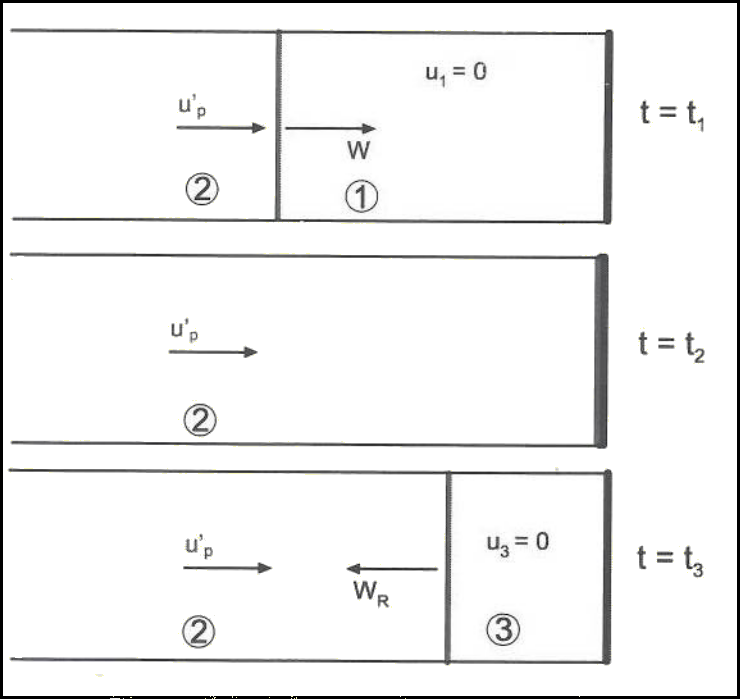
Figure 62. Reflection of a Moving Shock
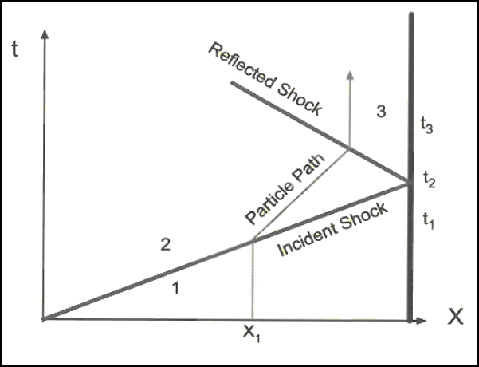
Figure 63. x-t diagram for Reflected Shock Wave
Calculation of Reflected Shock Speed and Properties
For the reflected shock,the governing equations are applied to a frame of reference where the reflected shock is stationary.
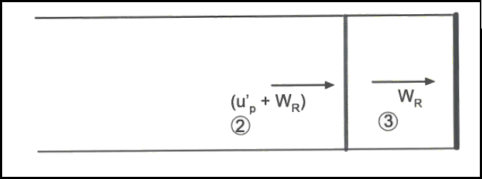
Figure 64. Frame of Reference change for a Reflected Shock Wave.
For this case,
$$ρ_2(W_R+u^'_p)=ρ_3W_R$$
$$P_2+ρ_2(W_R+u^'_p)^2=P_3+ρ_3W_R^2$$
$$h_2+{(W_R+u^'_p)^2}/2=h_3+ W_R^2/2$$
By definition,
$$M_s=W/a_1\text" and "M_R={(W_R+u^'_p)}/a_2$$
By substitution and rearranging the above equations with the Mach number definitions,
$$M_R/{M_R^2-1}=M_s/{M_s^2-1}√{1+{2(γ-1)}/{(γ+1)^2}(M_s^2-1)(γ+1/M_s^2)}$$
Thus the reflected shock Mach number, $M_R$, is a function of the incident shock and the ratio of specific heats of the gas ($γ$).
In the limiting case of $M_s = 1$, then $M_R = 1$
When $M_s →∞$ then $M_R=√{{2γ}/{γ-1}}$. For large values of $M_s$
$$P_3/P_1≈{2γ(3γ-1)}/{γ^2-1}M_s^2$$
$$T_3/T_1≈{2(γ-1)(3γ-1)}/{(γ+1)^2}M_s^2$$
Pressure and Temperature reach very high values behind a reflected shock.
Unsteady Expansion Waves
Expansion waves are the ones through which the gas expands. Similar to moving shock waves, there are also moving or unsteady expansion waves. In the piston-cylinder arrangement, it is possible to have the piston moving away from the gas instead of into the gas as shown in Fig 65.
As the piston moves to the right the gas in the cylinder expands, its pressure decreases. This occurs through a sequence of expansion waves. Unlike the shock compression situation, each expansion wave is generated in a medium that has a lower temperature and pressure than the previous instant and hence the wave speed is smaller. Consequently every subsequent wave travels slower than the one before. There is no coalescing of waves, instead they move apart.
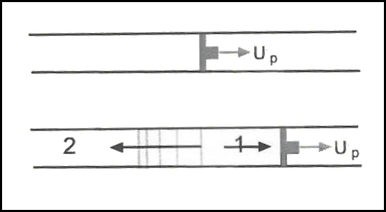
Figure 65. Unsteady Expansion
Fig. 66 shows this process on an x-t diagram. The gas expansion happens between a leading wave (Head Wave) and a final wave (Tail Wave). The Head Wave moves into a medium at rest and initiates motion. The subsequent waves increase the gas motion and the final Tail Wave is the one that expands the gas fully so that it is moving with the same speed as the piston, $U_p$.
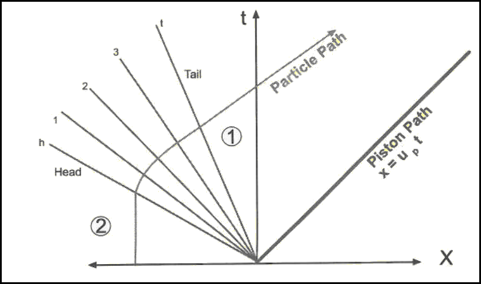
Figure 66. x-t diagram for an expansion wave system.
Shock Tube Flow
The above theory for unsteady flows is used in a typical application call a Shock Tube. This is a short duration facility creating moving shocks along a tube into a test region. It has many uses. It is used by Physicists and Chemists to study high temperature and high enthalpy gas effects and in the creation of chemical lasers. Aerodynamicists use it to study flow about objects places in a test section for supersonic or hypersonic flow.
Workings of a Shock Tube
A shock tube essentially consists of a high pressure gas region initially separated form a low pressure gas region by a thin diaphragm. The chamber containing the high pressure gas (region 4) is called a Driver Gas and the one containing the low pressure gas (region 1) is called the Driven gas.
The flow is initiated by rupturing the diaphragm separating the two regions. This can be done up over pressure or more accurately by a hydraulically actuated cutting needle.
The rupture of the diaphragm causes the high pressure gas to rush into the low pressure driven tube. This gas motion produces a piston effect and thus creates a shock wave moving at speed $W$. As well, the expansion of the high pressure gas into the driven section produces a set of expansion waves that move upstream into the driver tube. Initially there are two states for the gas (1) and (4).
At a small time after initiation, there will be four states, the additional ones will be (region 2) gas behind the moving shock and (region 3) the gas behind the moving expansion waves. Regions (2) and (3) will be separated by a Contact Discontinuity. This is a thin region of gas that was initially at the diaphragm but is hen traveling at speed, $U_p$, into the driven section. Pressure will be continuous between regions (2) and (3) but the temperature and density will vary due the very different gas states that originally existed on either side of the diaphragm. Pressure and density distribution along the shock tube is shown in Fig. 67.
There are a number of variations in terms of hardware that can be used to create a shock tube. The diaphragm may be a plastic sheet or aluminium plate depending on the initial pressure ratio. Instead of a diaphragm a fast action valve may be used. The sheet rupture has the advantage of being faster in creating a shock wave but the disadvantage of sending pieces of plastic or aluminium down the tube with the flow. In many cases the diaphragm is scribed with a 'petal' pattern so that its rupture is better controlled and extra debris in the flow is avoided.
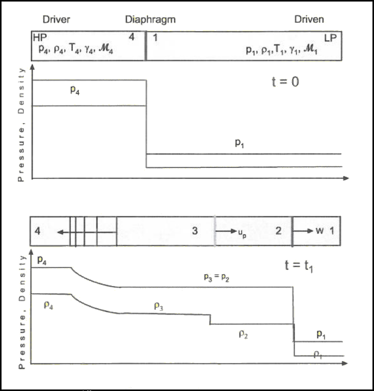
Figure 67. Flow in a Shock Tube.
Governing Equations for Shock Tube Flow
Equations developed for moving shock and expansion waves can be applied to solve the shock tube flow.
$$\text"let "P_{41}=P_4/P_1\text" , "P_{21}=P_2/P_1\text" , "a_{14}=a_1/a_4$$
$P_{41}$ is the initial Diaphragm Pressure Ratio and $P_{21}$ is the Shock Pressure Ratio.
Across the contact surface pressure and velocity does not change, so
$$u_3=u_2\text" , "P_3=P_2$$
For the moving shock wave,
$$u_2=a_2/γ_1(P_{21}-1)√{{{2γ_1}/{γ_1+1}}/{P_21+{γ_1-1}/{γ_1+1}}}$$
Assuming isentropic flow through the expansion waves,
$$P_3/P_4=(1+{γ_4-1}/2(u_3/a_4)^{{2γ_4}/{γ_4-1}})$$
which can be rearranged to
$$u_3=a_4(2/{γ_4-1}(P_3/P_4-1))^{{γ_4-1}/{2γ_4}}$$
by equating the speeds and pressures at the contact surface and rearranging, gives,
$$P_{41}=P_{21}(1-{(γ_4-1)a_{14}(P_{21}-1)}/{√{2γ_1(2γ_1+(γ_1+1)(P_{21}-1))}})^{{-2γ_4}/{γ_4-1}}$$
This is an expression relating the pressure ration of the shock produced in comparison to the initial diaphragm pressure ratio. The Mach number of the shock produced can be calculated form this $P_{21}$ pressure ratio. Figs 69 and 70 show shock pressure ratio and shock Mach number as a function of diaphragm pressure ratio for the case where both driven and driver gas are ideal air, $γ= 1.4$.
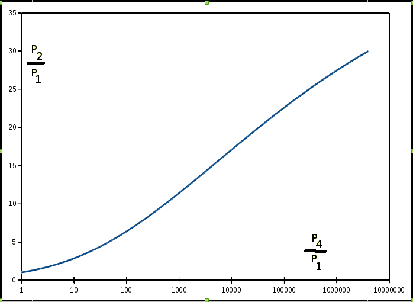
Figure 69. Shock Pressure Ratio as a function of Diaphragm Pressure Ratio
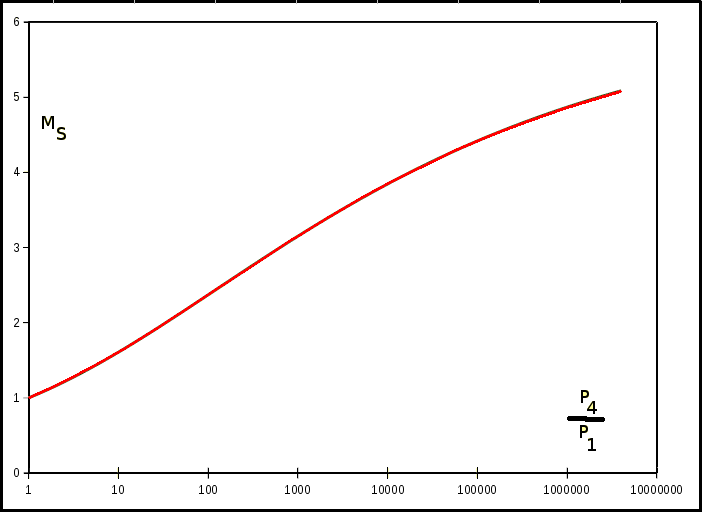
Figure 70. Shock Mach Number as a function of Diaphragm Pressure ratio.
Based on the above equations, it is clear that a stronger diaphragm pressure ratio produces a stronger moving shock. However, to get extremely fast shocks requires enormous pressure ratios $P_{41}$.
The ratio of acoustic speeds, $a_{41}$, is a primary component of the equation, where
$$a_{41}={√{γ_1R_1T_1}}/{√{γ_4R_4T_4}}$$
It is usually difficult to maintain significant temperature differences between the two initial regions but it is quite easy to use different driver and driven gases to maximise $a_{41}$ and hence increase shock strength. For an initial constant temperature of the tube,
$$a_{41}=√{{γ_1R_1}/{γ_4R_4}}$$
In the case where a Helium driver gas, $γ_4 = 1.67$, $R_4 = 2077$ J/kg K, is used with air, $γ_1= 1.4$, $R_4 = 287$ J/kg K, as the driven gas then $a_{41} = 0.34$. In this case, the required diaphram pressure ratio, $P_{41}$, is only about 10% of that required for the air-air case in order to produce a Mach 3 shock wave.
X-t Diagram for a Shock Tube.
The X-t diagram for a shock tube is shown in Fig 71. As can be seen in the diagram a shock tube is a short duration facility, Fig 72. If the test measurements are to be taken at section $x=X_T$, then the testing begins the instant the shock arrives at $X_T$. The flow behind the shock is uniform but the shock will reflect from the end wall and “clean” flow at $X_T$ is lost once the reflected shock reaches the test location. The length of the test time is “tt”. Due to the high velocity of the wave the test times will be in the order of millisecs or less. If the test point is moved further away from the end of the tube then this location will be quickly impacted by the contact discontinuity and again only a very short test duration is possible.
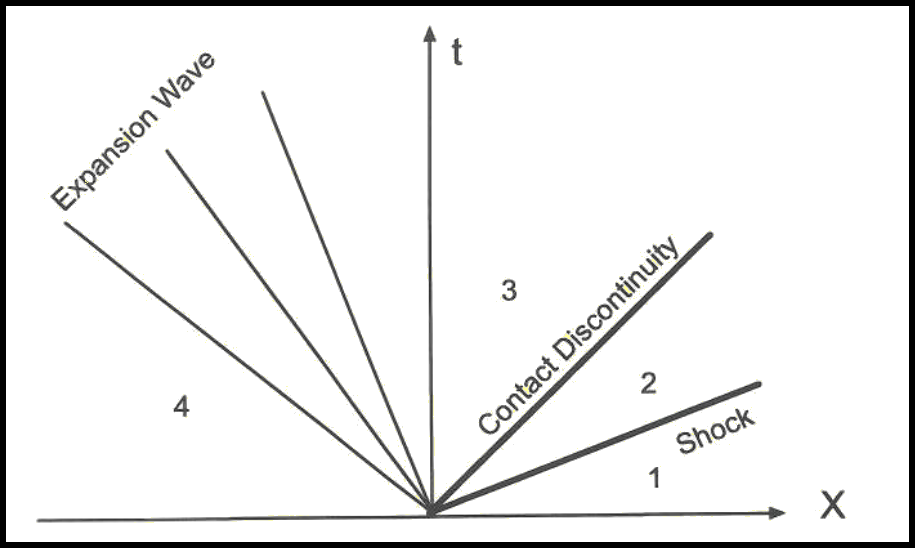
Figure 71. X-t Diagram for Shock tube.
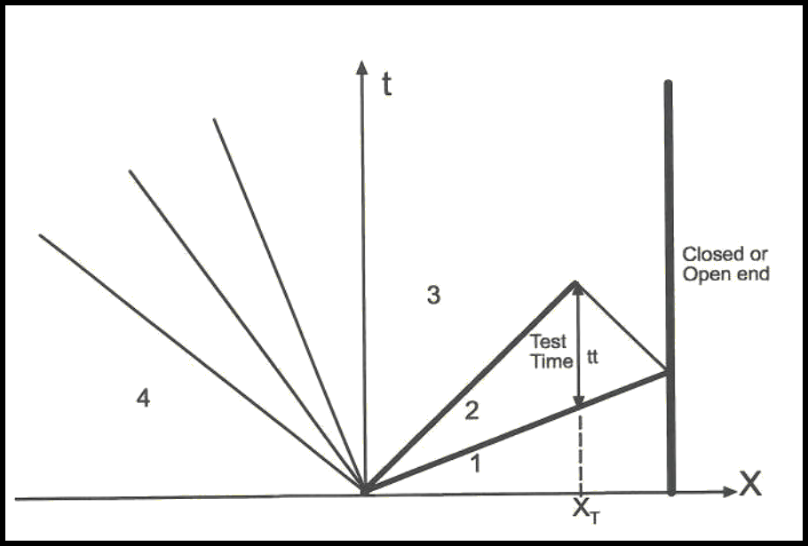
Figure 72. X-t Diagram for Shock tube with reflected wave.
PROGRAM for Simulation of Shock Tube Flow.
The following program allows the simulation of shock tube flow. Data on the driver and driven gas properties can be entered along with the intial pressures in regions (1) and (4). After the conditions have been entered (press INIT) to give valaues to the tubes initial gas properties. Then the diaphragm can be removed (press RUN). This produces a simulation of the moving shock wave, expansion waves and reflections. At any point in time, a snapshot of the pressures at the transducer locations can be taken by pressing PAUSE.
Shock-Tube Simulation (Client java-script)